MakieLayout.jl Tutorial
In this tutorial, we will see some of the capabilities of MakieLayout.jl while building a complex figure step by step. This is the final result we will create:
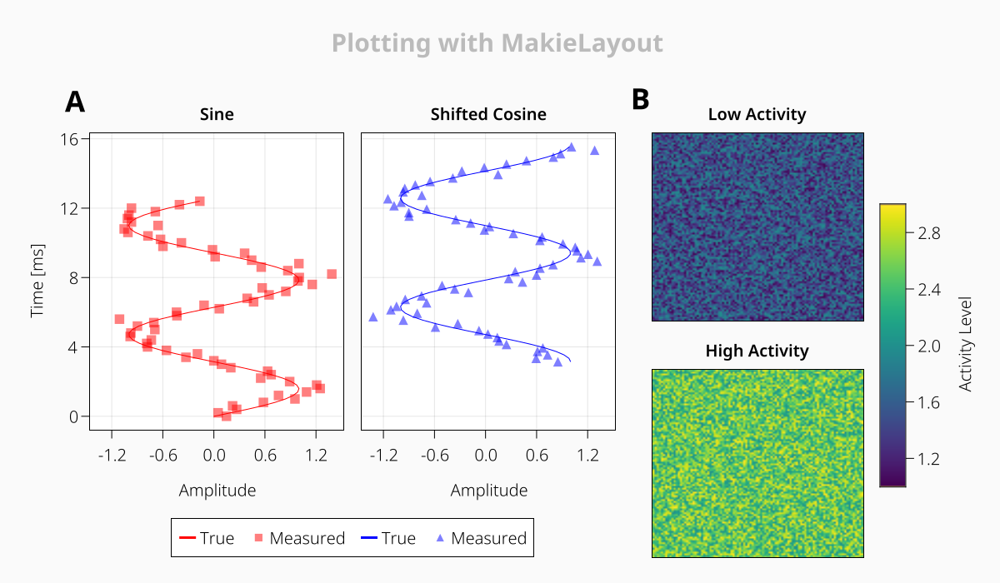
All right, let's get started!
Scene and Layout
First, we import the necessary packages and then create the main scene and layout. The function layoutscene is a convenience function that creates a Scene which has a GridLayout attached to it that always fills the whole scene area. You can pass the outer padding of the top layout as the first argument.
using MakieLayout
using CairoMakie; CairoMakie.activate!()
using AbstractPlotting
outer_padding = 30
scene, layout = layoutscene(outer_padding, resolution = (1200, 700),
backgroundcolor = RGBf0(0.98, 0.98, 0.98))First LAxis
The scene is completely empty, I have made the background light gray so it's easier to see. Now we add an LAxis. This is an axis or subplot type that MakieLayout defines which knows how to behave in a layout (which the Makie version doesn't).
We create the axis and place it into the layout in one go. You place objects in a layout by using indexing syntax. You can save the axis in a variable by chaining the = expressions.
ax1 = layout[1, 1] = LAxis(scene, title = "Sine")
Plotting into an LAxis
We can plot into the axis with the ! versions of Makie's plotting functions. Contrary to Makie, these calls return the plot objects, not the Scene or LAxis, so it's easier to save them.
xx = 0:0.2:4pi
line1 = lines!(ax1, sin.(xx), xx, color = :red)
scat1 = scatter!(ax1, sin.(xx) .+ 0.2 .* randn.(), xx,
color = (:red, 0.5), markersize = 15px, marker = '■')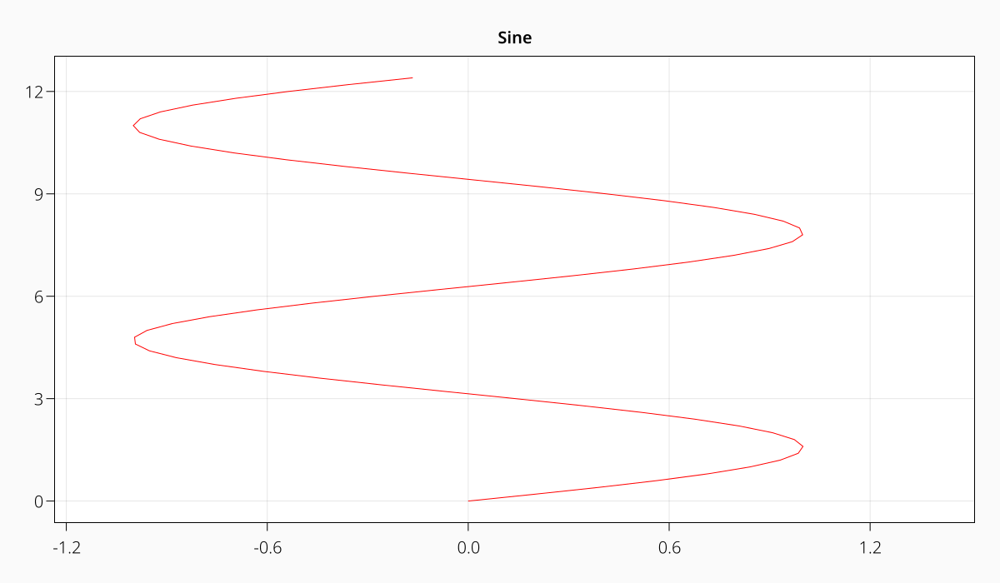
Multiple Axes
This looks nice already, but we want another axis with a cosine this time, to the right of the one we have. Currently our layout has one row and one cell, and only one LAxis inside of it:
layoutGridLayout[1, 1] with 1 children
┗━ [1:1 | 1:1] LAxis
We can extend the grid by indexing into new grid cells. Let's place a new axis next to the one we have, in row 1 and column 2.
ax2 = layout[1, 2] = LAxis(scene, title = "Shifted Cosine")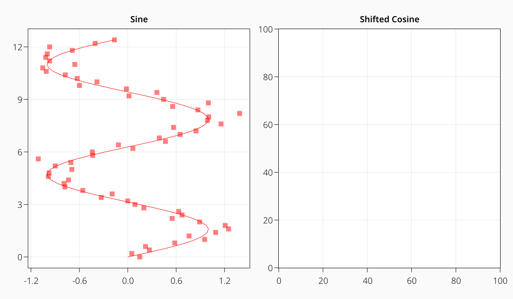
As you can see, the first axis has shrunk to the left to make space for the new axis on the right. We can take another look at the layout to see how it has changed:
layoutGridLayout[1, 2] with 2 children
┣━ [1:1 | 1:1] LAxis
┗━ [1:1 | 2:2] LAxis
Let's plot into the new axis, the same way we did the scatter plots before.
line2 = lines!(ax2, cos.(xx), pi .+ xx, color = :blue)
scat2 = scatter!(ax2, cos.(xx) .+ 0.2 .* randn.(), pi .+ xx,
color = (:blue, 0.5), markersize = 15px, marker = '▲')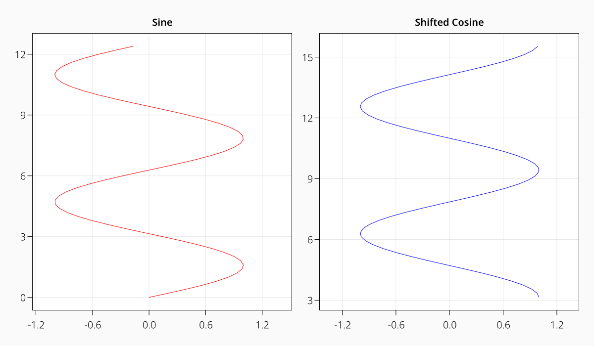
Linking Axes
We want to make the left and right axes correspond to each other, so we can compare the plots more easily. To do that, we link both x and y axes. That will keep them synchronized.
linkaxes!(ax1, ax2)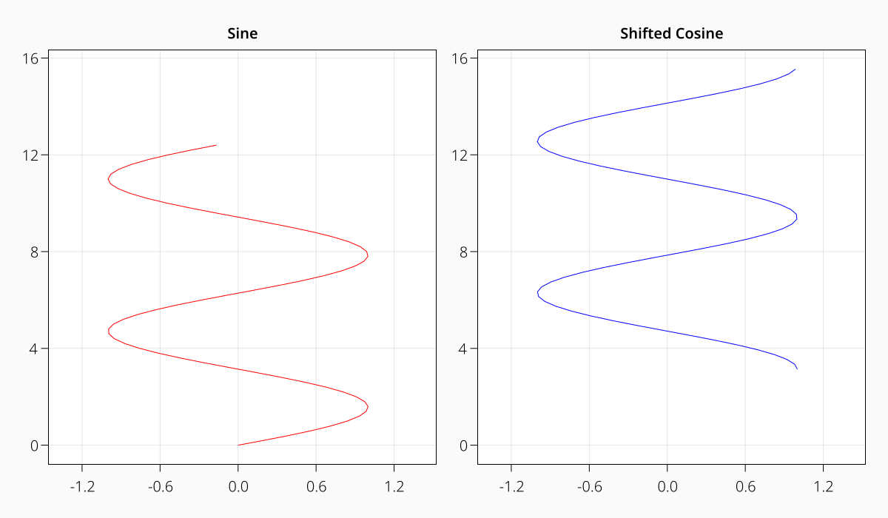
This looks good, but now both y-axes are the same, so we can hide the right one to make the plot less cluttered. We keep the grid lines, though. You can see that now that the y-axis is gone the two LAxes grow to fill the gap.
hideydecorations!(ax2, grid = false)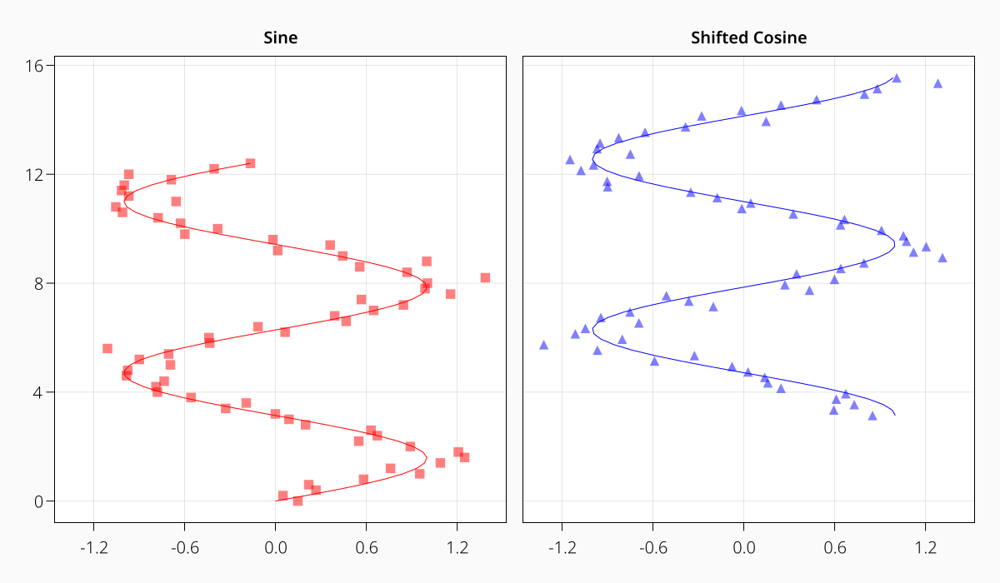
Even though our plots are entirely made up, we should follow best practice and label the axes. We can do this with the xlabel and ylabel attributes of the LAxis.
ax1.xlabel = "Amplitude"
ax2.xlabel = "Amplitude"
ax1.ylabel = "Time [ms]"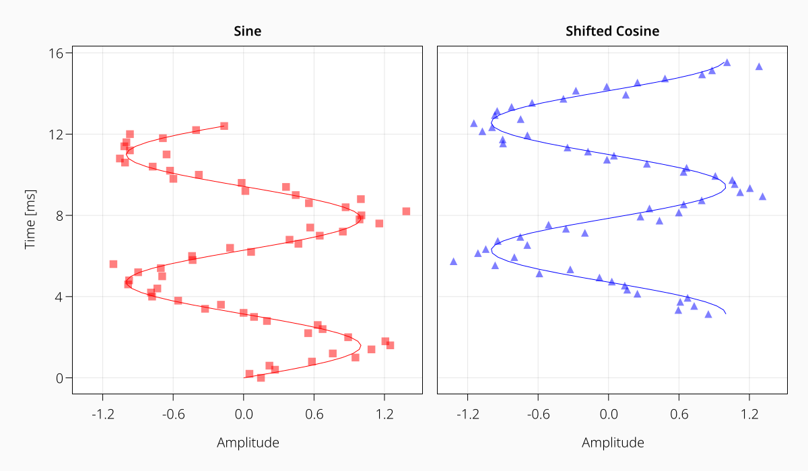
Adding a Legend
Let's add a legend to our plot that describes elements from both axes. We use LLegend for that. LLegend is a relatively complex object and there are many ways to create it, but here we'll keep it simple. We place the legend on the right again, in row 1 and column 3. Instead of specifying column three, we can also say end+1.
leg = layout[1, end+1] = LLegend(scene,
[line1, scat1, line2, scat2],
["True", "Measured", "True", "Measured"])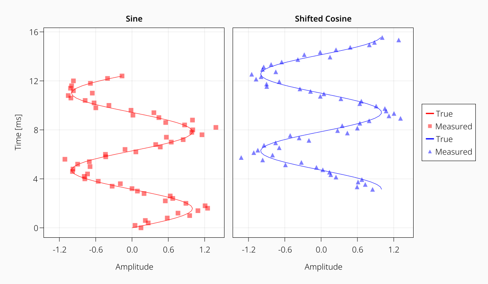
You can see one nice feature of MakieLayout here, which is that the legend takes much less horizontal space than the two axes. In fact, it takes exactly the space that it needs. This is possible because objects in MakieLayout can tell their width or height to their parent GridLayout, which can then shrink the row or column appropriately.
One thing that could be better about this plot, is that the legend looks like it belongs only to the right axis, even though it describes elements from both axes. So let's move it in the middle below the two. This is easily possible in MakieLayout, without having to recreate the plot from scratch. We simply assign the legend to its new slot.
We want it in the second row, and spanning the first two columns.
layout[2, 1:2] = leg
Fixing Spacing Issues
There are a couple of things wrong with this. The legend is where we want it, below the two axes. But it takes too much space vertically, and there is a large gap on the right.
Let's deal with the gap on the right first. It's the hole that was left by the legend, and it's even bigger now because it gets an equal share of space with the two axes, now that there is no legend shrinking the column width to its own size.
We can remove empty cells in a layout by calling trim! on it:
trim!(layout)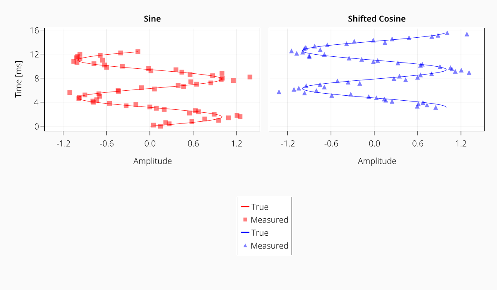
This is much better already! But the legend still takes too much space vertically. The reason for that is the default tellheight setting of the legend. It's set to false, which essentially means that it can compute its own height, but doesn't tell the layout about it. This makes sense for the most common situation where the legend sits on the right of an axis. We wouldn't want the axis to shrink to the height of the legend. But now that the legend has its own row, we do want this behavior. So we set the tellheight attribute to true.
leg.tellheight = true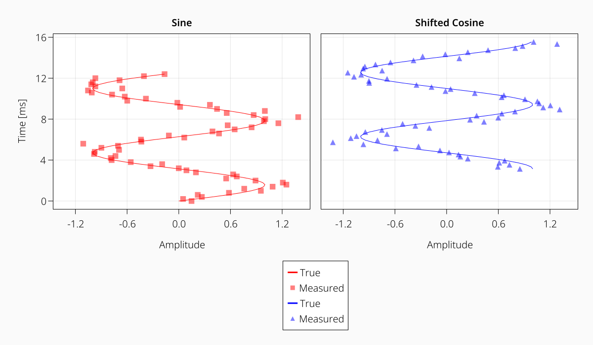
Now the legend's row is shrunk to fit. One thing that we can do to improve the use of space is to change the legend's orientation to :horizontal.
leg.orientation = :horizontal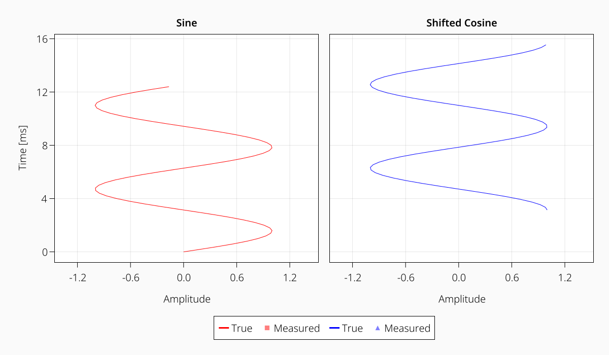
Sublayouts
Let's add two new axes with heatmaps! We want them stacked on top of each other on the right side of the figure. We'll do the naive thing first, which is to place them in the first and second row of the third column. There are multiple versions of layout assignment syntax for convenience. Here, we create and assign two axes at once. The number of cells and objects has to match to do this.
hm_axes = layout[1:2, 3] = [LAxis(scene, title = t) for t in ["Low Activity", "High Activity"]]
heatmaps = [heatmap!(ax, i .+ rand(100, 100)) for (i, ax) in enumerate(hm_axes)]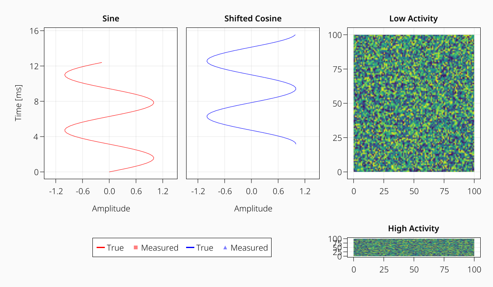
This looks weird, the two axes do not have the same height. Rather, the lower one has the height of the legend in the same row. What can we do to remedy this situation?
We have to recognize that what we want is not possible with one layout. We don't care about the heatmap axes being the same height as the other two axes and the legend, respectively. We only care that the top and the bottom of the two groups are aligned.
There is usually more than one solution for any given layout problem. In other plotting software, people sometimes circumvent our current issue by dividing the layout into many more cells than there are content objects, and have the content span several rows or columns. For example the left axes span rows 1:10, the legend 10:12, while the heatmap axes span rows 1:6 and 7:12, respectively. This is complicated, not very flexible, and luckily unnecessary in MakieLayout.
We will instead help ourselves by using a nested GridLayout, just for the two heatmap axes. We move the axes into it by assigning them to their new slots. The detaching from the main layout happens automatically.
hm_sublayout = GridLayout()
layout[1:2, 3] = hm_sublayout
# there is another shortcut for filling a GridLayout vertically with
# a vector of content
hm_sublayout[:v] = hm_axes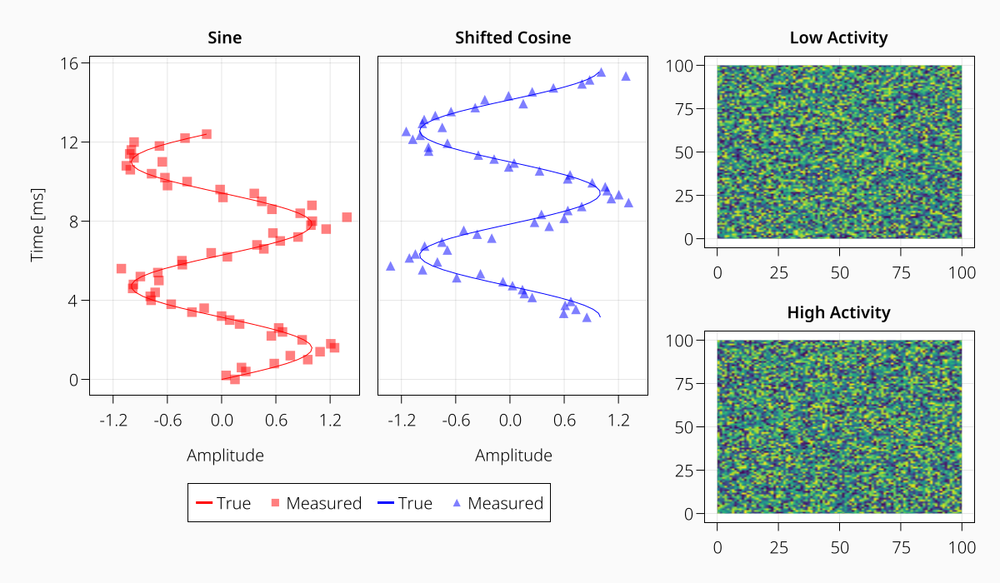
We don't care about the axis decorations, as it's often the case with image plots. The function hidedecorations! hides both x and y decorations at once. Also, the default autolimits are computed with a small margin, which doesn't look good in our case. We can set the autolimit margins to zero using tightlimits!.
tightlimits!.(hm_axes)
hidedecorations!.(hm_axes)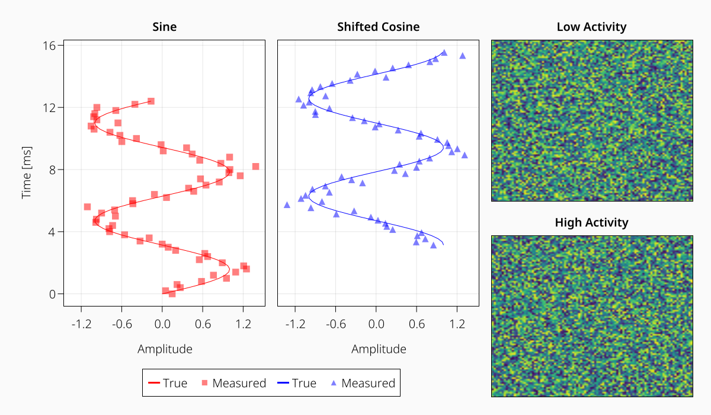
Adding a Colorbar
Now, we also want to add a color bar for the two heatmaps. Right now, their colors are independently scaled from each other. We choose a scale that makes sense for both of them (in our case, we know data ranges only from 1 to 3) and assign that to both heatmaps. Then we create an LColorbar object with one of the heatmaps. This way, the color bar copies color range and color map from that heatmap.
We want to place the color bar to the right of the heatmaps, spanning the full height. We could either place it within the sublayout we just created, or in the main layout. Both versions can be made to look the same, but we'll choose the sublayout, because that is a more meaningful grouping, and we could move the whole assembly around later by moving only the sublayout.
We can place an object along all existing rows or columns using the : notation.
for hm in heatmaps
hm.colorrange = (1, 3)
end
cbar = hm_sublayout[:, 2] = LColorbar(scene, heatmaps[1], label = "Activity Level")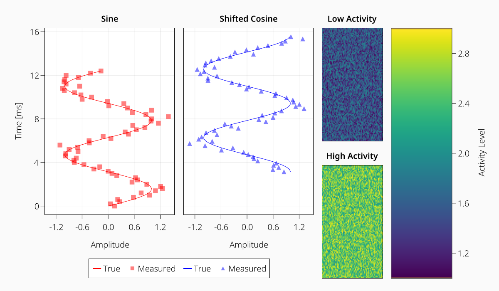
The color bar is quite chunky because it takes 50% of the available width in the sublayout. Let's give it a fixed width of 30 units.
cbar.width = 30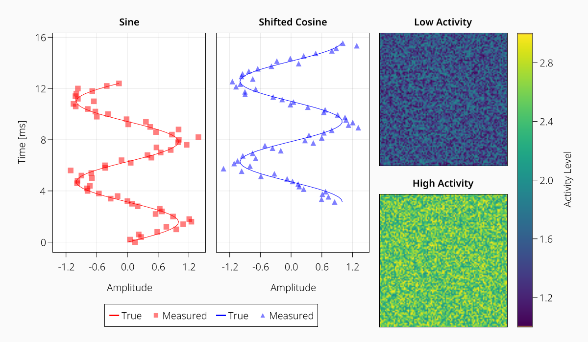
Much better! Note that you can usually set all attributes during creation of an object (LColorbar(scene, width = 30)) or after the fact, like in this example.
Objects can also have a width or height relative to the space given to them by their parent GridLayout. If we feel that the colorbar is a bit too tall, we can shrink it to two thirds of the available height using Relative(2/3).
If you only specify a number like 30, it is interpreted as Fixed(30).
cbar.height = Relative(2/3)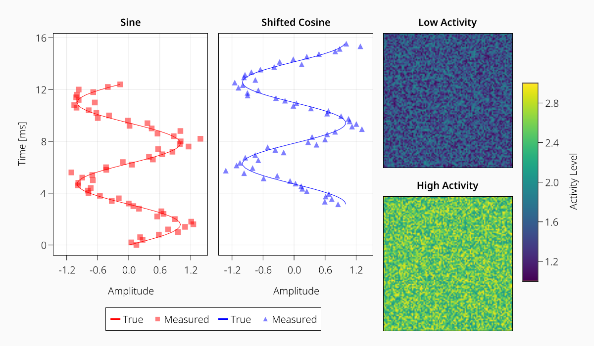
Adding a Title
Now the plot could use a title! While other plotting packages sometimes have functions like supertitle, they often don't work quite right or force you to make manual adjustments. In MakieLayout, the LText object is much more flexible as it allows you to place text anywhere you want. We therefore create our super title not with a dedicated function but as a simple part of the whole layout.
How can we place content in a row above row 1? This is easy in MakieLayout, as indexing outside of the current GridLayout cells works not only with higher numbers but also with lower numbers. Therefore, we can index into the zero-th row, which will create a new row and push all other content down.
Note that after this, all the cell indices of our current content will have changed to reflect the new GridLayout size.
supertitle = layout[0, :] = LText(scene, "Plotting with MakieLayout",
textsize = 30, font = "Noto Sans Bold", color = (:black, 0.25))
Subplot Labels
In figures meant for publication, you often need to label subplots with letters or numbers. These can sometimes cause trouble because they overlap with other content, which has to be fixed after the fact in vector graphics software.
This is not necessary in MakieLayout. Let's place letters in the upper left corners of the left group and the right group. To do that, we will make use of a property of layouts that we have used without mentioning it. When we place our letters, we want them to act similarly to the axis titles or labels. In MakieLayout, layoutable objects have an inner part, which is considered the "important" area that should align with other "important" inner areas. You can see that the three upper axes align with their top spines, and not their titles.
All that is outside of the main area is part of the "protrusions". These help keeping the logic of the layout simple while allowing to easily align what is supposed to be aligned.
So for our corner letters, we don't want to create new columns or rows. Doing that would probably cause alignment issues in most cases. Instead, we place these objects inside the protrusions of existing cells. That means they are part of the gaps between columns and rows, which is fitting for our labels.
We can do this by specifying the Side as a third argument when indexing the layout. The default we have used so far is Inside(). For us, TopLeft() is the correct choice. (Remember that our previously first row is now the second row, due to the super title.)
label_a = layout[2, 1, TopLeft()] = LText(scene, "A", textsize = 35,
font = "Noto Sans Bold", halign = :right)
label_b = layout[2, 3, TopLeft()] = LText(scene, "B", textsize = 35,
font = "Noto Sans Bold", halign = :right)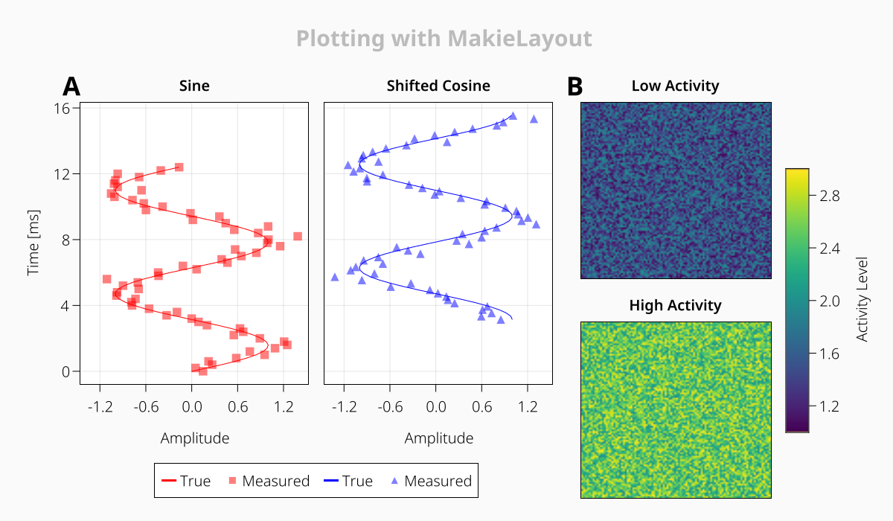
That looks good! You can see that the letters, larger than the axis titles, have increased the gap between the title and the axes to fit them. In most other plotting software, you would probably have an overlap issue now.
One last thing we'll fix, is giving the labels a bit of padding at the bottom and the right, so they are not too close to the axes. The order of the padding values is (left, right, bottom, top).
label_a.padding = (0, 6, 16, 0)
label_b.padding = (0, 6, 16, 0)And there we have it! Hopefully this tutorial has given you an overview how to approach the creation of a complex figure in MakieLayout. Check the rest of the documentation for more details and other dynamic parts like sliders and buttons!